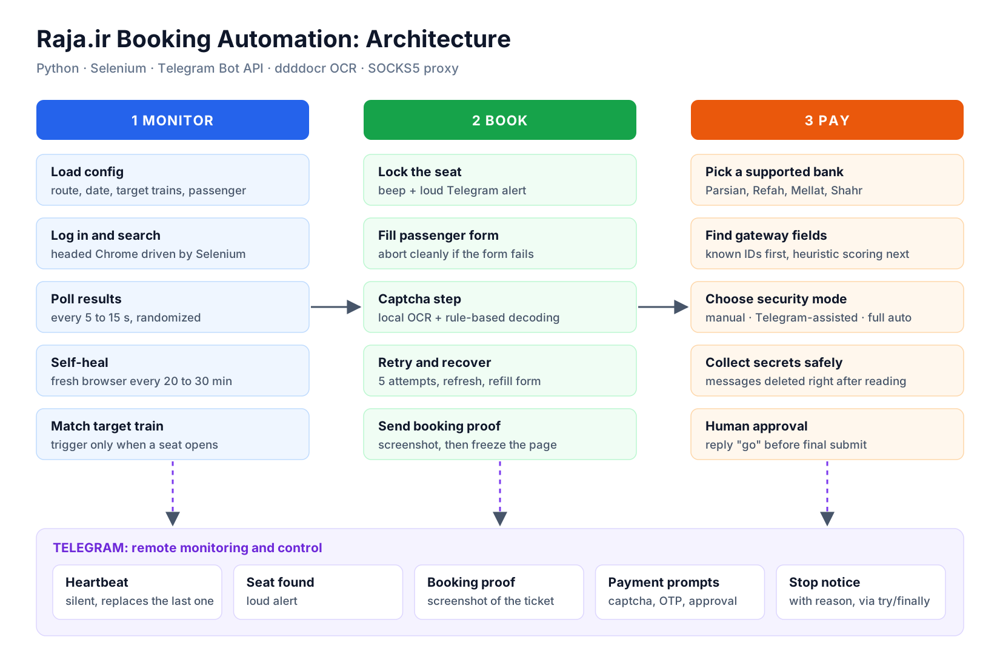

Personal project · Process automation
Train ticket booking bot
Popular routes on raja.ir sell out, and seats come back at random when someone cancels. Catching one by hand means refreshing for hours. This bot does the waiting, locks the seat the moment it opens, and hands me the payment step on my phone.
- Role
- Designer and developer
- Result
- Seat to payment page in under a minute
- Stack
- Python, Selenium, Telegram Bot API, OCR
- Code
- Private
The process
- Monitor. Logs in, searches the route and date, and re-checks the target trains every 5 to 15 seconds at random intervals. It restarts its own browser every 20 to 30 minutes so long runs stay stable.
- Book. When a seat opens it locks it, fills the passenger form, gets through the captcha step, and sends a screenshot of the booking to Telegram.
- Pay. It picks a supported bank, finds the gateway fields (known IDs first, then a scoring heuristic for unfamiliar gateways), and asks for card details on Telegram. Those messages are deleted the moment they are read, and nothing is submitted until I reply "go".
- Report. A silent heartbeat, a loud alert when a seat is found, and a stop notice with the reason if anything ends the run.

< 1 min
from a seat appearing to the bank payment page, with the booking proof and payment prompts already on my phone.
Design choices that mattered
- Never refresh a live payment page. Once payment starts, a flag blocks every refresh and restart.
- Keep a human in the loop for money. The bot prepares everything; I approve the final submit.
- Fail loudly. Every exit sends a Telegram message, so a silent crash never looks like "still running".